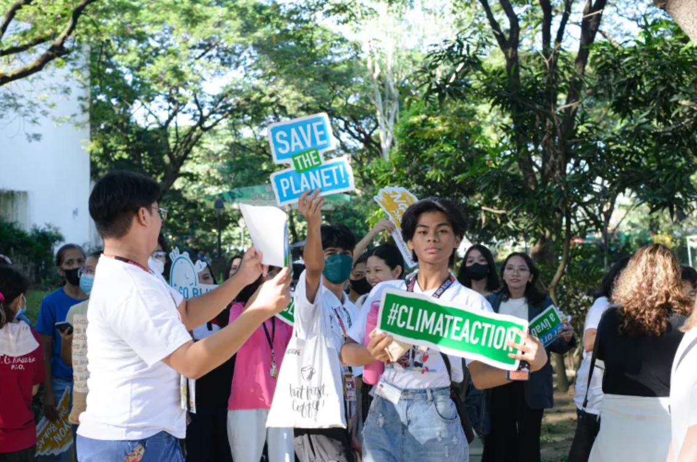
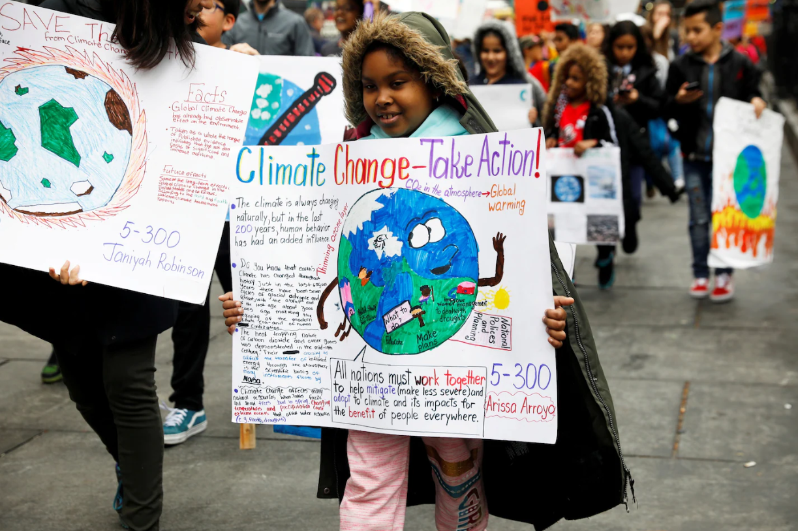

Youth Rising for Climate Action
The power to change the future is in the hands of the youth. Every action taken today builds a greener and more sustainable tomorrow.
Background of the Problem
Climate change presents significant challenges to development in the Philippines. Between 2002 and 2024, the country lost 196 thousand hectares of humid primary forest, accounting for 13% of its total tree cover loss during that period. The overall area of humid primary forest diminished by 4.3% in these years.
Furthermore, from 2001 to 2024, the Philippines lost 1.52 million hectares of tree cover, representing 8.2% of the total tree cover area in 2000, along with 928 million metric tons of CO₂ equivalent emissions. Without intervention, climate change could lead to a 13.6% reduction in GDP by 2040, with the most vulnerable households being hit the hardest.
| Statistic | Value | Source |
|---|---|---|
| Loss of humid primary forest | 196,000 hectares | Global Forest Watch, 2024 |
| Total tree cover loss | 1.52 million hectares (8.2%) | Global Forest Watch, 2024 |
| CO₂ equivalent emissions | 928 million metric tons | Global Forest Watch, 2024 |
| Projected GDP reduction by 2040 | 13.6% | The World Bank, 2022 |
What's Being Done Now
Young people in the Philippines are emerging as powerful agents of change, using digital platforms to lead climate action. Initiatives like the 2030 Youth Force Philippines engage nearly half of the country’s population to make the Sustainable Development Goals a reality through education, activation, and collaboration.
The Climate Change Commission promotes digital innovation among youth, encouraging the use of online platforms for awareness and advocacy. Youth voices have been recognized by the Quezon City Government and UNICEF, highlighting their leadership in collective climate action campaigns.
Where We Come In
The Gen Green Movement website is designed to inform, engage, and empower the youth of the Philippines to participate actively in climate action. By highlighting real data, youth-led projects, and opportunities to act, we motivate users to become advocates for climate action within their communities.
Visions of Resistance
Photo by Climate Action Network, 2023
Photo by Friedman, 2019, The Washington Post
Call to Action
Join the Gen Green Movement today! Volunteer, share information, and participate in local climate initiatives. Together, we can make a difference and protect our planet for future generations.
References
- 2030 Youth Force Philippines | UN SDG Action Awards. (2022, March 4). UN SDG Action Awards. https://sdgactionawards.org/2030-youth-force-philippines/
- Forest Watch. (2024). Philippines Deforestation Rates & Statistics | GFW. Global Forest Watch. https://www.globalforestwatch.org/dashboards/country/PHL/
- Friedman, L. (2019, July 12). Youth climate summit starts today. It’s full of young activists trained in the anti-Trump movement. The Washington Post. https://www.washingtonpost.com/politics/2019/07/12/youth-climate-summit-starts-today-its-full-young-activists-trained-anti-trump-movement/
- Salas, E. (2025, July 7). Topic: Global climate change. Statista. https://www.statista.com/topics/1148/global-climate-change/#topicOverview
- The World Bank. (2022, November 9). Philippines Country Climate and Development Report. World Bank. https://www.worldbank.org/en/country/philippines/publication/philippines-country-climate-and-development-report
- Young people in the Philippines are leading the fight against climate change. (2023, November 19). UNICEF Philippines. https://www.unicef.org/philippines/press-releases/young-people-philippines-are-leading-fight-against-climate-change
- Youth Drives Climate Action through Digital Innovation. (2024). Climate.gov.ph. https://climate.gov.ph/news/911